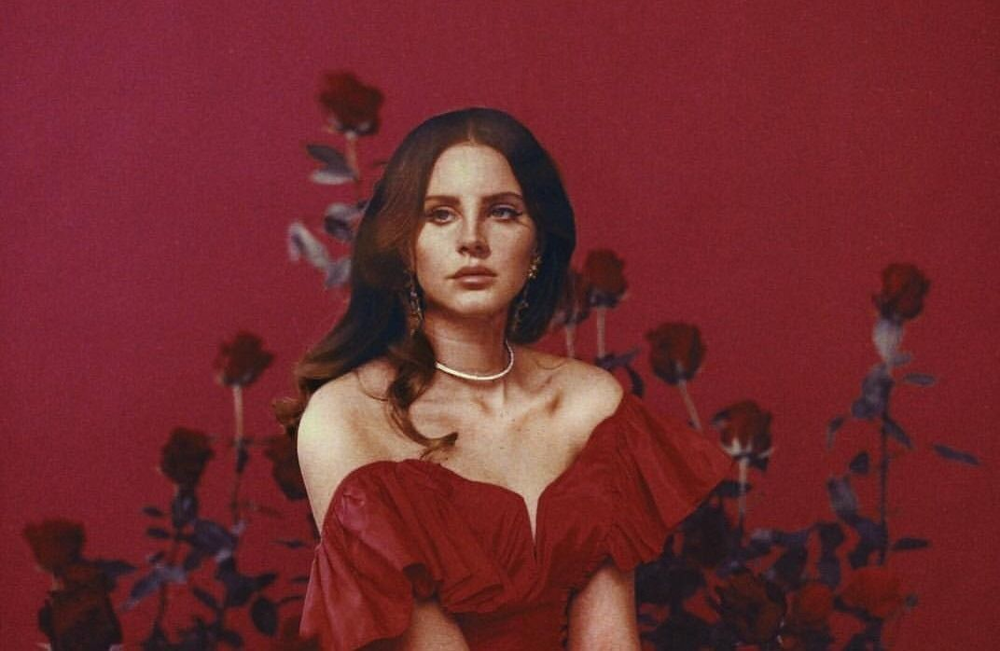

Lana Del Rey
Elizabeth Woolridge Grant (Nueva York, 21 de junio de 1985),conocida artísticamente como Lana Del Rey, es una cantante,
compositora, modelo, actriz, escritora y productora estadounidense. Su música se destaca por su estilizada calidad cinematográfica,
su estilo retro y la exploración del romance trágico, el glamur y la melancolía, con frecuentes referencias a la cultura pop contemporánea
y la estadounidense de los años 1950 y 1960.
Criada en el norte del estado de Nueva York, comenzó a actuar en clubes de la ciudad de Nueva York a los 18 años y firmó su primer contrato discográfico cuando tenía 20 con 5 Points Records.En enero de 2010, lanzó su álbum de estudio debut Lana Del Ray.
Después del fracaso de aquel proyecto, el avance de Del Rey en la industria se produjo tras el éxito viral de su sencillo debut «Video Games» en 2011.Ella firmó entonces con Interscope y Polydor Records más tarde ese año.
Su segundo álbum de estudio, Born to Die (2012), demostró ser un éxito internacional y el sencillo del disco, «Summertime Sadness»,quedó entre los diez primeros en el Billboard Hot 100 de Estados Unidos, así como los sencillos «Blue Jeans», «Born to Die» y «National Anthem».Del Rey luego lanzó el EP nominado al Grammy Paradise en 2012. Al año siguiente, la cantante compuso para el cine mientras escribía y protagonizaba su cortometraje musical Tropico; lanzando así «Young and Beautiful» como el sencillo principal para la película The Great Gatsby (2013).
En 2014, Del Rey lanzó su tercer álbum de estudio, Ultraviolence, que presentó un mayor uso de la instrumentación impulsada
por la guitarra y debutó en la cima del Billboard 200 de Estados Unidos. A finales de diciembre de ese mismo año,
contribuyó en la banda sonora de la película Big Eyes, lo que le produjo nominaciones a los Premios Grammy y a los Premios Globos de Oro.
Su cuarto y quinto álbum, Honeymoon (2015) y Lust for Life (2017), vieron un regreso al estilo tradiciones de sus lanzamientos anteriores,
el último de los cuales contiene colaboraciones con The Weeknd, ASAP Rocky, Sean Lennon, y Stevie Nicks y f
ue nominado al Premio Grammy al mejor álbum de pop vocal.3031 Del Rey colaboró con Ariana Grande y Miley Cyrus en «Don't Call Me Angel»
para la comedia de acción Charlie's Angels (2019), que alcanzó el puesto número 13 en los Billboard Hot 100.
El 30 de agosto de 2019, Del Rey lanzó su álbum Norman Fucking Rockwell!, el cual recibió una gran aclamación de la crítica y
dos nominaciones a los Premios Grammy, incluida la canción y el álbum del año.En 2020, Del Rey debutó como poetisa con su primer poemario, Violet Bent Backwards over the Grass, al igual que con un audiolibro homónimo en donde narra cada uno de los poemas del mismo.Sus siguientes álbumes de estudio, Chemtrails over the Country Club y Blue Banisters, siguieron en 2021.
Del Rey colaboró con Taylor Swift en «Snow on the Beach» para el décimo álbum de estudio de Swift, Midnights (2022),
que alcanzó el puesto número cuatro en el Billboard Hot 100 de Estados Unidos, convirtiéndose en la canción más alta de Del Rey en la lista.
A partir de 2020, Del Rey ha vendido 19.1 millones de álbumes y más de 13 millones de sencillos en todo el mundo Del Rey ha vendido 19.1 millones de álbumes y más de 13 millones de sencillos en todo el mundo.
